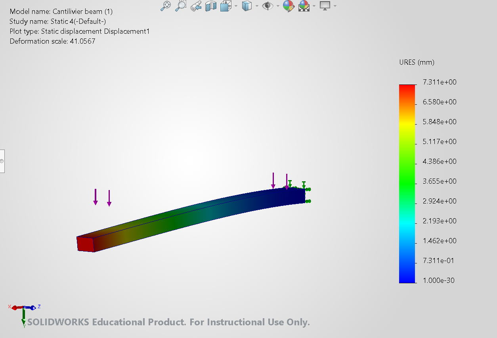
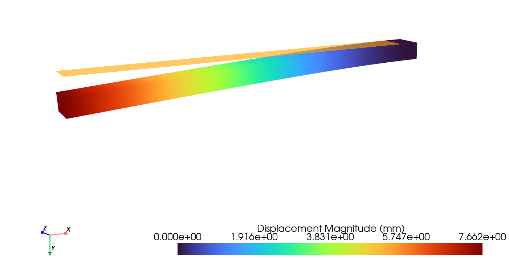
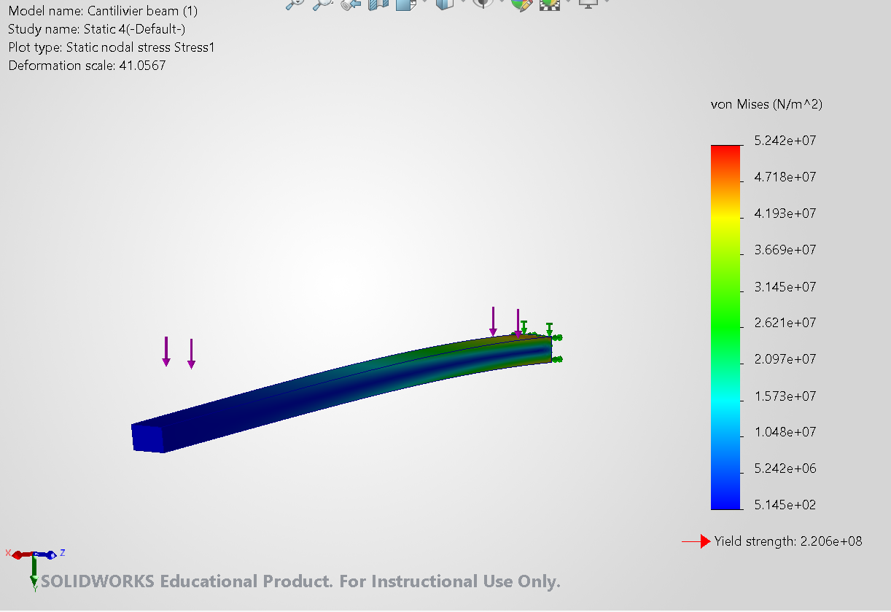
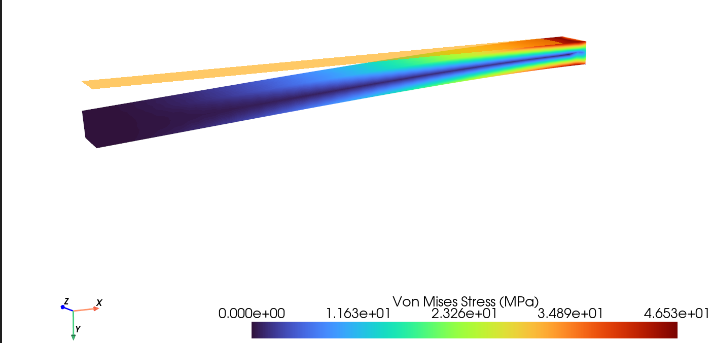

Project Overview
A desktop application for linear elastic analysis of STEP CAD models, combining a Python interface with a custom C++ finite element solver. Gmsh generates quadratic, 10-node tetrahedral meshes; OpenMP accelerates assembly and Eigen handles the sparse linear solve.
The PyQt6 and PyVista interface supports face selection, constraints, distributed loads, and visualization of displacement and von Mises stress.
Key Contributions
- Connected STEP geometry import, meshing, boundary conditions, and a custom structural solver in one desktop workflow.
- Implemented a Python/C++ workflow using nanobind, Eigen, and OpenMP.
- Benchmarked a cantilever beam against SolidWorks Simulation and analytical beam theory.
Cantilever Beam Benchmark
A 3,000 mm rectangular beam with a 231.853 mm width and 141.542 mm vertical depth, fixed at one end and subjected to a total 25,000 N load distributed uniformly over its full length.
The analytical comparison assumes loading in the Y direction, Young's modulus of 210 GPa, linear elasticity, and no gravity. Plain carbon steel was specified for the test; the material modulus used in each simulation still needs confirmation.
| Result | Beam theory | SolidWorks | Custom FEA tool |
|---|---|---|---|
| Maximum displacement | 7.333 mm | 7.311 mm | 7.662 mm |
| Difference from theory | Reference | −0.31% | +4.48% |
| Nominal bending stress / FEA peak von Mises | 48.439 MPa | 52.42 MPa | 46.53 MPa |
| Difference from nominal stress | Reference | +8.22% | −3.94% |
Analytical reference: I = bh³/12 = 5.47885 × 10⁻⁵ m⁴; tip deflection = FL³/(8EI); fixed-end moment = FL/2 = 37,500 N·m; nominal outer-fiber stress = M(h/2)/I. An approximate shear correction increases predicted displacement to 7.350 mm.
What the comparison shows
Both solvers reproduce the expected displacement increase toward the free end and stress concentration near the fixed end. At the assumed 210 GPa modulus, SolidWorks is closer to the analytical displacement. The custom tool's peak stress is closer to nominal beam bending stress, but local three-dimensional clamp stresses make this an incomplete measure of stress accuracy.
This is an initial benchmark, with mesh convergence and matching material/load settings still to be verified. Modulus matters: at 200 GPa, the analytical bending deflection becomes 7.700 mm. SolidWorks displays deformation at 41.0567×; the custom tool's display scale is unspecified, and each stress plot uses its own color range.


SolidWorks displacement
Maximum resultant displacement: 7.311 mm.


Custom tool displacement
Maximum displacement magnitude: 7.662 mm.


SolidWorks von Mises stress
Maximum: 52.42 MPa, converted from 5.242 × 10⁷ N/m².


Custom tool von Mises stress
Maximum: 46.53 MPa.